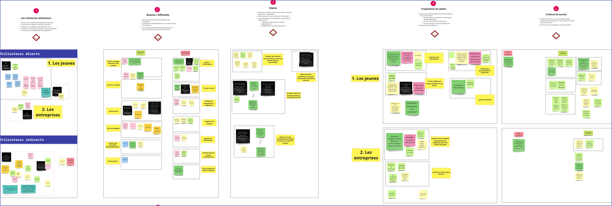
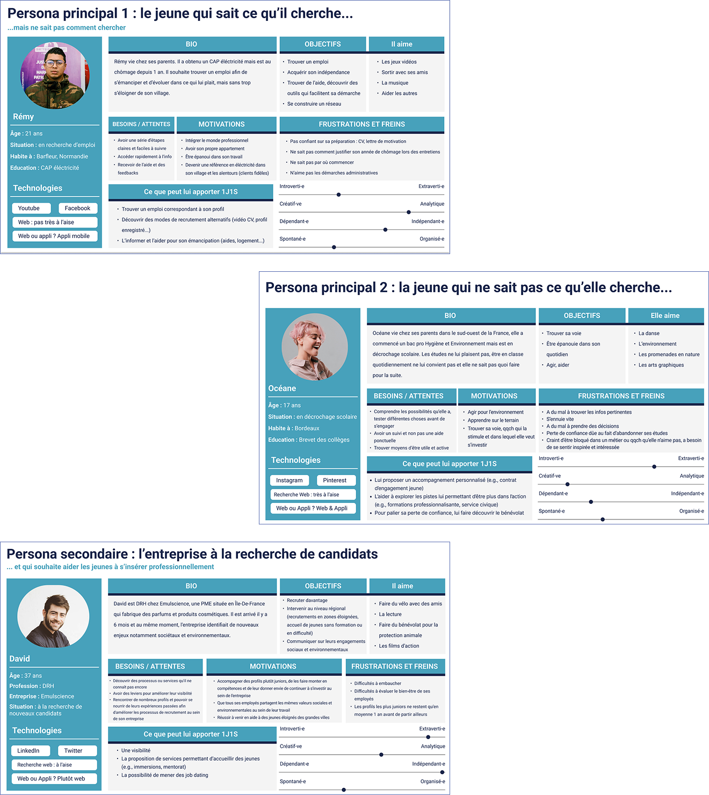
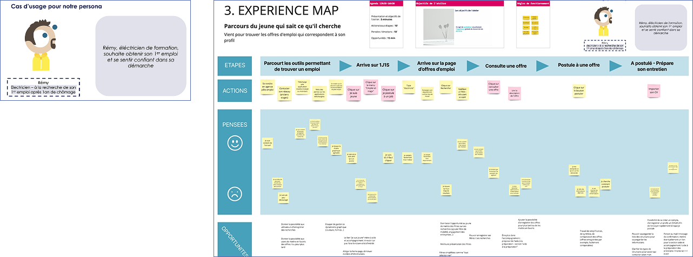
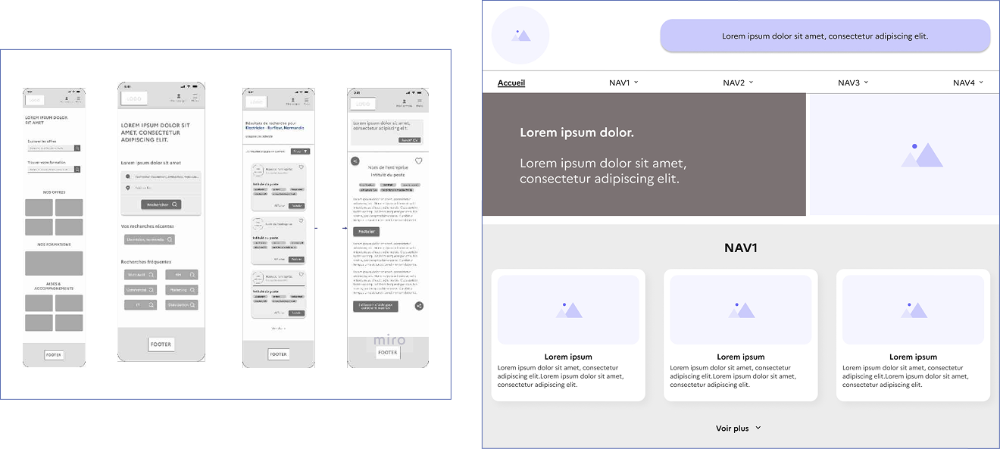
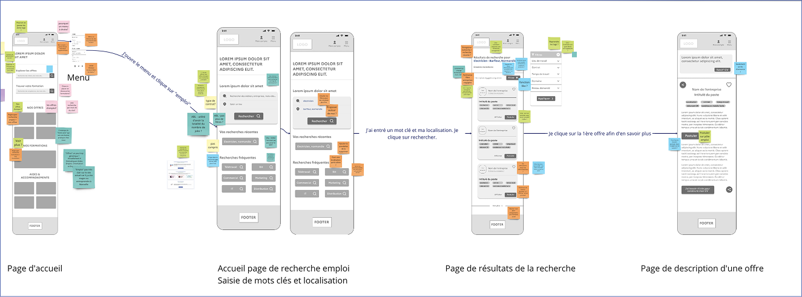

Étude de cas
Cadrer la conception d'une plateforme nationale pour les jeunes (1jeune1solution — Ministère du Travail)
Établir la vision et poser les bases d'un site public centré utilisateurs pour aider les jeunes de 13 à 30 ans à trouver offres, formations, accompagnements et aides au sein d'une plateforme unique.
Contexte
L'ambition de 1 jeune 1 solution : rassembler sur un seul site gouvernemental l'ensemble des services utiles aux jeunes — emploi, formation, logement, aides — pour leur offrir un point d'entrée unique et crédible.
Sur cette phase de cadrage, j'étais la designer en charge du périmètre design. Mon rôle : comprendre en profondeur le problème, les besoins utilisateurs et les contraintes du projet pour poser des bases solides avant la phase de delivery.

Ce que j'ai fait
Explorer le problème
- Entretiens et ateliers avec les parties prenantes (beta.gouv, ministère, DINUM)
- Workshops Miro : idéation, priorisation, validation
- Analyse comparative de plateformes publiques et partenaires
- Recherche qualitative et quantitative auprès des jeunes
- Guerilla testing lors d'un événement d'orientation à Paris
Poser les bases de conception
- Proto-personas, experience maps et user journey maps
- Architecture de l'information validée par ~15 card sorting tests
- Wireframes et prototypes basse fidélité
- Roadmap initiale pour la phase de delivery



Résultats
